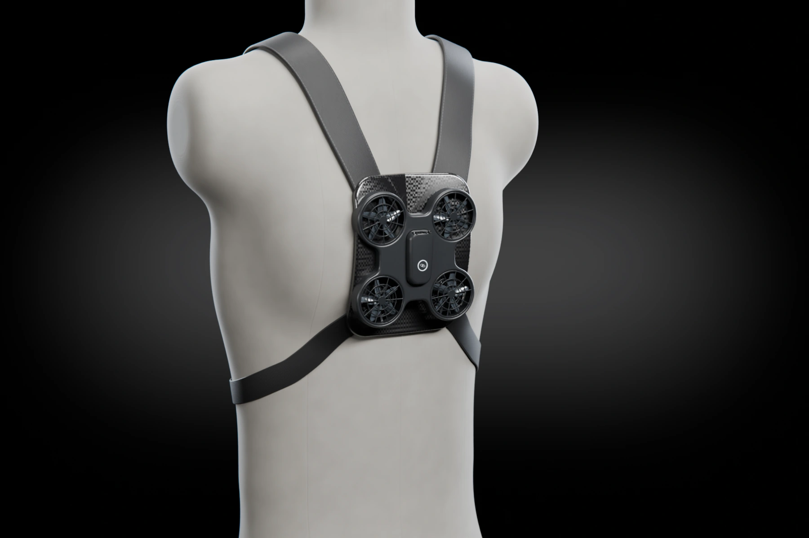

Silk harness · W1
Silk
Two straps. Nothing else.
Silk is worn like the lightest backpack you own: two padded straps over the shoulders, a sternum strap across the chest and a thin carbon plate between the shoulder blades. Wisp docks flat on the plate and charges there.
The trigger is the clasp on the sternum strap, right where your hand already is.
- 150 g
- Carbon back plate
- 38 mm webbing
- Chest clasp trigger
- Charges while worn